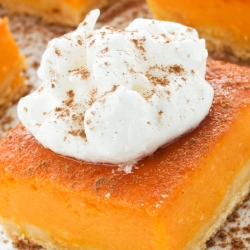

Продукти:
*тиква – 500 гр.
*масло – 250 гр.
*орехи - 80 гр
*захар – 2 ч. ч.
*прясно мляко – 1 ч. ч.
*мед - 3 с. л.
*канела
*кокосови стърготини
*бисквити - обикновени, за основа
Приготвяне:
Тиквата се почиства и нарязва на парчета, обелва се и се вари на пара. Отцежда се от водата и се разбива на пюре. Поръсваме със захар.
В пюрето наливаме прясно мляко, добавяме меда и слагаме на огъня да кипне, като бъркаме енергично. Ври 40–45 мин. на т их огън. Вземаме малко от сместа и потапяме в студена вода - ако стане мека топчица, сместа е готова.
Ароматизираме с канела. Добавяме маслото и разбъркваме, докато се поеме. Когато се получи ронлива смес, прибавяме смлените орехи.